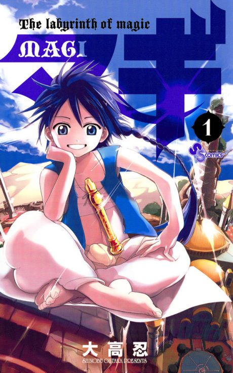

Anime
Anime
Manga2012 · Action, Adventure, Fantasy
Magi: The Labyrinth of Magic
マギ The labyrinth of magic
AniList7.8
Animeter—
2 seasons50 ep
MangaCh. 199
Anime finished. Where does the manga pick up?
Start at Chapter199
The anime ends around chapter 198 in the Magnostadt arc, so start at around chapter 199 (volume 20). The anime compresses and rearranges parts of the later arcs. The manga is finished at 369 chapters.
1198369 end
Season 2Start reading here